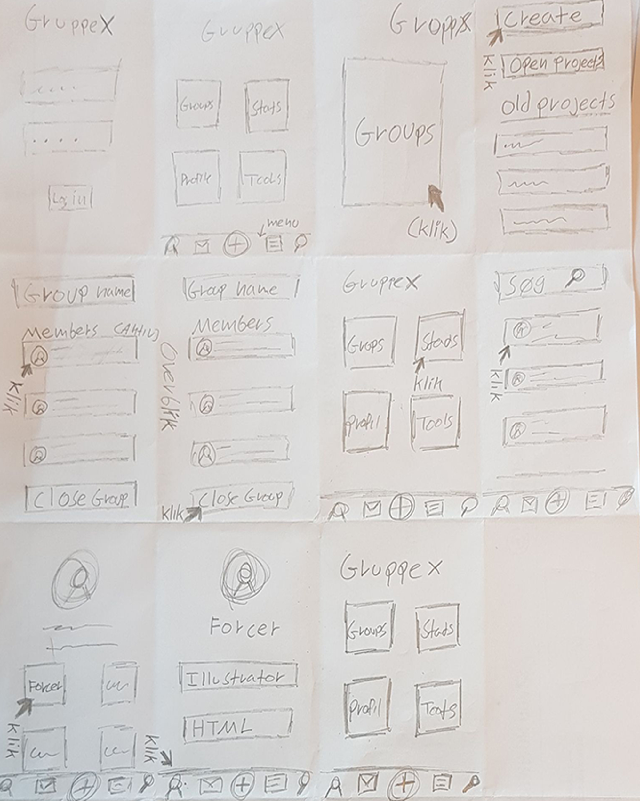
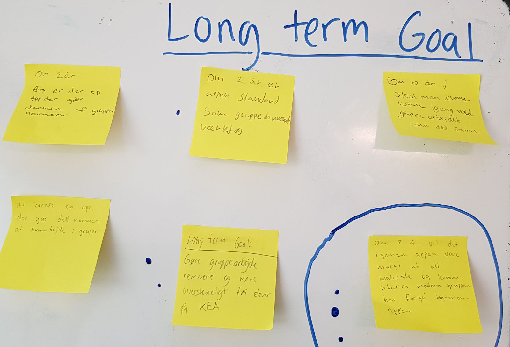
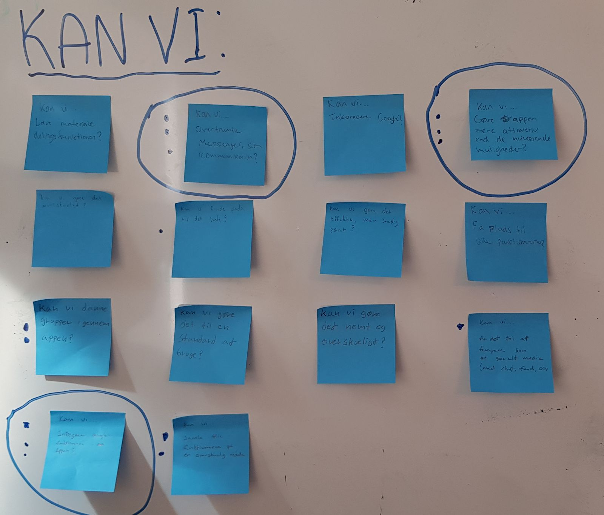

04.03.01
Design sprint: Native App

04.03.01 Var et nyt design sprint, med målet at udvikle en Native Fronter applikation. Opgaven bød arbejde i alle faser af design sprinter: map, sketch, decide, prototype og pitch.
Efter en række forskellige øvelser, blev det endelige goal at udvikle en gruppedannelse applikation som alle studrende åbner hver gang der er gruppearbejde.
Link til opgave →03.02.07 Still-foto

03.02.07 Still-foto
03.02.07 Still-foto
 03.02.07 Storyboard